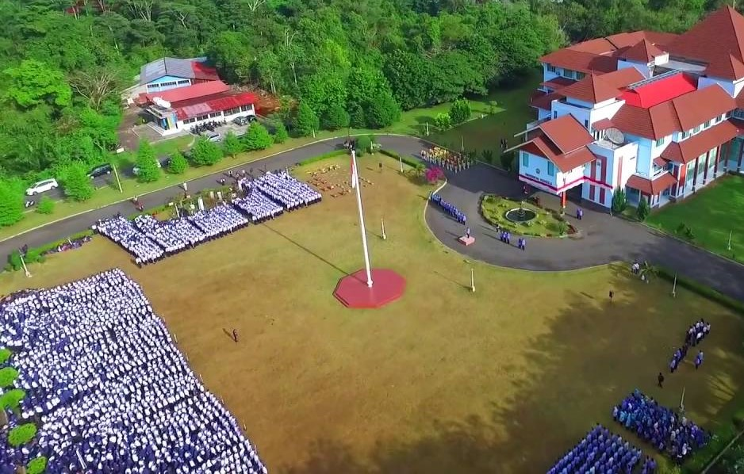

Sejarah

Keberadaan UNIB merupakan wujud nyata dari perjuangan yang tak kenal menyerah dari Gubernur
Soeprapto yang mendapat dukungan penuh dari masyarakat, tokoh adat, Pemda Tk. I Bengkulu, dan
perguruan tinggi swasta bernama Universitas Semarak Bengkulu (UNSEB). Dukungan universitas ini diwujudkan
dalam bentuk penyerahan mahasiswa UNSEB sebagai cikal bakal UNIB beserta lahan Kampus seluas 24,9 Ha di
Desa Beringin Raya Bengkulu.
Kendala utama yang dihadapi pada saat proses pendirian UNIB berdasarkan hasil
studi kelayakan yang dilakukan oleh Universitas Sriwijaya di antaranya yaitu tidak tersedianya tenaga edukatif,
sehingga pada waktu itu disimpulkan bahwa di Bengkulu belum layak didirikan sebuah universitas negeri. Kendala
tersebut akhirnya dapat diatasi setelah Gubernur Soeprato menjalin kerjasama dengan Universitas Gadjah Mada
Yogyakarta atas petunjuk Presiden Soeharto. Realisasi dari hasil kerjasama tersebut dikirimlah beberapa tenaga
edukatif dari UGM antara lain Prof. Ir. Soenjoto Sumodihardjo, Dr. Ir. Soekotjo, Drs. Sutarto, Ir. Supratoyo dan
H. Hidjazi, S.H. untuk diperbantukan di UNIB baik sebagai pejabat struktural maupun sebagai tenaga edukatif.
Mereka melakukan rekruitmen tenaga edukatif dari beberapa universitas di Jawa dan Sumatera.
Berdasarkan keputusan Presiden RI Nomor 17 tahun 1982 UNIB resmi didirikan dan diresmikan oleh
Menteri Pendidikan dan Kebudayaan Republik Indonesia, Prof. Dr. Daud Yusuf.
Fakta Singkat

Kampus Hijau adalah julukan Unib, Kampus asri dengan banayk perpohonan rindang, yang berlokasi di Sumatera
Indonesia. Kampus Modern, Terbuka, dan Multi Budaya, serta Berjiwa Nasional.Unib memiliki 29.327 siswa dan 902 Dosen.
Pengabdian Masyarakat
Pengabdian Masyarakat adalah suatu kegiatan yang bertujuan untuk membantu masyarakat dalam
beberapa aktivitas tanpa mengharapkan imbalan dalam bentuk apapun. Secara umum program ini dirancang
oleh berbagai universitas atau institut yang ada di Indonesia untuk memberikan kontribusi nyata bagi bangsa,
khususnya dalam mengembangkan kesejahteraan dan kemajuan bangsa Indonesia. Kegiatan Pengabdian Masyarakat
merupakan salah satu bagian dari Tri Dharma Perguruan Tinggi.
Desa Binaan

Dalam membangun konsep Desa Wisata. Desa Rindu Hati bekerjasama dengan LPPM Universitas Bengkulu, melaksanakan
kegiatan "Pelatihan Desain dan Pengelolaan Website" Konten Youtube sebagai konten promosi Desa Rindu Hati
serta Karang Taruna Bengkulu Tengah bekerja sama dengan Universitas Bengkulu membina desa.
Visi dan Misi
Berikut Merupakan Visi dan Misi Universitas Bengkulu
Visi :
- Visi UNIB menjadi universitas kelas dunia pada tahun 2025.
Misi :
- Mengembangkan pendidikan dan penelitian berkelas dunia;
- Menghasilkan karya berstatus Hak atas Kekayaan Intelektual (HKI)
- Melaksanakan pengabdian sesuai dengan kebutuhan masyarakat lokal, nasional, dan internasional
- Mengembangkan sistem tata kelola universitas yang baik dan bersih.